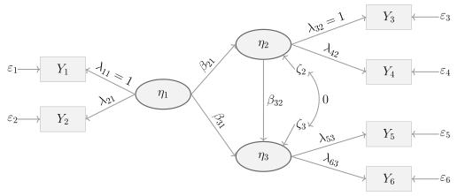

B | Übung 2
Pfaddiagramm

Regressionsgleichungen (manifest und latent)
SPOILER!
\[ \begin{aligned} Y_1 &= \lambda_{11}\eta_1 + \varepsilon_1 = \eta_1 + \varepsilon_1 \quad (\lambda_{11}=1)\\ Y_2 &= \lambda_{21}\eta_1 + \varepsilon_2\\ \eta_2 &= \beta_{21}\eta_1 + \zeta_2 = \eta_1 + \zeta_2 \quad (\beta_{21}=1)\\ Y_3 &= \lambda_{32}\eta_2 + \varepsilon_3 = \eta_2 + \varepsilon_3 \quad (\lambda_{32}=1)\\ &= \eta_1 + \zeta_2 + \varepsilon_3\\ Y_4 &= \lambda_{42}\eta_2 + \varepsilon_4 = \eta_2 + \varepsilon_4 \quad (\lambda_{42}=1)\\ &= \eta_1 + \zeta_2 + \varepsilon_4\\ \eta_3 &= \beta_{31}\eta_1 + \beta_{32}\eta_2 + \zeta_3\\ &= \beta_{31}\eta_1 + \beta_{32}(\eta_1+\zeta_2) + \zeta_3\\ &= (\beta_{31}+\beta_{32})\eta_1 + \beta_{32}\zeta_2 + \zeta_3\\ Y_5 &= \lambda_{53}\eta_3 + \varepsilon_5 = \eta_3 + \varepsilon_5 \quad (\lambda_{53}=1)\\ &= (\beta_{31}+\beta_{32})\eta_1 + \beta_{32}\zeta_2 + \zeta_3 + \varepsilon_5\\ Y_6 &= \lambda_{63}\eta_3 + \varepsilon_6\\ &= \lambda_{63}\left[(\beta_{31}+\beta_{32})\eta_1 + \beta_{32}\zeta_2 + \zeta_3\right]+\varepsilon_6\\ &= \lambda_{63}(\beta_{31}+\beta_{32})\eta_1 + \lambda_{63}\beta_{32}\zeta_2 + \lambda_{63}\zeta_3 + \varepsilon_6 \end{aligned} \]Varianzen
SPOILER!
\[ \mathrm{Var}(Y_1)=\mathrm{Var}(\eta_1)+\mathrm{Var}(\varepsilon_1) \] \[ \mathrm{Var}(Y_2)=\lambda_{21}^2\mathrm{Var}(\eta_1)+\mathrm{Var}(\varepsilon_2) \] \[ \mathrm{Var}(Y_3)=\mathrm{Var}(\eta_1+\zeta_2+\varepsilon_3)=\mathrm{Var}(\eta_1)+\mathrm{Var}(\zeta_2)+\mathrm{Var}(\varepsilon_3) \] \[ \mathrm{Var}(Y_4)=\mathrm{Var}(\eta_1+\zeta_2+\varepsilon_4)=\mathrm{Var}(\eta_1)+\mathrm{Var}(\zeta_2)+\mathrm{Var}(\varepsilon_4) \] \[ \begin{aligned} \mathrm{Var}(Y_5) &= \mathrm{Var}\bigl((\beta_{31}+\beta_{32})\eta_1+\beta_{32}\zeta_2+\zeta_3+\varepsilon_5\bigr)\\ &= (\beta_{31}+\beta_{32})^2\mathrm{Var}(\eta_1)+\beta_{32}^2\mathrm{Var}(\zeta_2)+\mathrm{Var}(\zeta_3)+\mathrm{Var}(\varepsilon_5) \end{aligned} \] \[ \begin{aligned} \mathrm{Var}(Y_6) &= \mathrm{Var}\bigl(\lambda_{63}(\beta_{31}+\beta_{32})\eta_1+\lambda_{63}\beta_{32}\zeta_2+\lambda_{63}\zeta_3+\varepsilon_6\bigr)\\ &= \lambda_{63}^2(\beta_{31}+\beta_{32})^2\mathrm{Var}(\eta_1)+\lambda_{63}^2\beta_{32}^2\mathrm{Var}(\zeta_2)+\lambda_{63}^2\mathrm{Var}(\zeta_3)+\mathrm{Var}(\varepsilon_6) \end{aligned} \]Kovarianzen
SPOILER!
Zwischen \(Y_1\) und anderen Variablen
\[ \begin{aligned} \mathrm{Cov}(Y_1,Y_2)&=\mathrm{Cov}(\eta_1+\varepsilon_1,\;\lambda_{21}\eta_1+\varepsilon_2)=\lambda_{21}\mathrm{Var}(\eta_1)\\ \mathrm{Cov}(Y_1,Y_3)&=\mathrm{Cov}(\eta_1+\varepsilon_1,\;\eta_1+\zeta_2+\varepsilon_3)=\mathrm{Var}(\eta_1)\\ \mathrm{Cov}(Y_1,Y_4)&=\mathrm{Cov}(\eta_1+\varepsilon_1,\;\eta_1+\zeta_2+\varepsilon_4)=\mathrm{Var}(\eta_1)\\ \mathrm{Cov}(Y_1,Y_5)&=\mathrm{Cov}\bigl(\eta_1+\varepsilon_1,\;(\beta_{31}+\beta_{32})\eta_1+\beta_{32}\zeta_2+\zeta_3+\varepsilon_5\bigr)\\ &=(\beta_{31}+\beta_{32})\mathrm{Var}(\eta_1)\\ \mathrm{Cov}(Y_1,Y_6)&=\mathrm{Cov}\bigl(\eta_1+\varepsilon_1,\;\lambda_{63}(\beta_{31}+\beta_{32})\eta_1+\lambda_{63}\beta_{32}\zeta_2+\lambda_{63}\zeta_3+\varepsilon_6\bigr)\\ &=\lambda_{63}(\beta_{31}+\beta_{32})\mathrm{Var}(\eta_1) \end{aligned} \]
Zwischen \(Y_2\) und anderen Variablen
\[ \begin{aligned} \mathrm{Cov}(Y_2,Y_3)&=\mathrm{Cov}(\lambda_{21}\eta_1+\varepsilon_2,\;\eta_1+\zeta_2+\varepsilon_3)=\lambda_{21}\mathrm{Var}(\eta_1)\\ \mathrm{Cov}(Y_2,Y_4)&=\lambda_{21}\mathrm{Var}(\eta_1)\\ \mathrm{Cov}(Y_2,Y_5)&=\lambda_{21}(\beta_{31}+\beta_{32})\mathrm{Var}(\eta_1)\\ \mathrm{Cov}(Y_2,Y_6)&=\lambda_{21}\lambda_{63}(\beta_{31}+\beta_{32})\mathrm{Var}(\eta_1) \end{aligned} \]
Zwischen \(Y_3\) und anderen Variablen
\[ \begin{aligned} \mathrm{Cov}(Y_3,Y_4)&=\mathrm{Cov}(\eta_1+\zeta_2+\varepsilon_3,\;\eta_1+\zeta_2+\varepsilon_4)=\mathrm{Var}(\eta_1)+\mathrm{Var}(\zeta_2)\\ \mathrm{Cov}(Y_3,Y_5)&=\mathrm{Cov}\bigl(\eta_1+\zeta_2+\varepsilon_3,\;(\beta_{31}+\beta_{32})\eta_1+\beta_{32}\zeta_2+\zeta_3+\varepsilon_5\bigr)\\ &=(\beta_{31}+\beta_{32})\mathrm{Var}(\eta_1)+\beta_{32}\mathrm{Var}(\zeta_2)\\ \mathrm{Cov}(Y_3,Y_6)&=\lambda_{63}\bigl[(\beta_{31}+\beta_{32})\mathrm{Var}(\eta_1)+\beta_{32}\mathrm{Var}(\zeta_2)\bigr] \end{aligned} \]
Zwischen \(Y_4\) und anderen Variablen
\[ \begin{aligned} \mathrm{Cov}(Y_4,Y_5)&=(\beta_{31}+\beta_{32})\mathrm{Var}(\eta_1)+\beta_{32}\mathrm{Var}(\zeta_2)\\ \mathrm{Cov}(Y_4,Y_6)&=\lambda_{63}\bigl[(\beta_{31}+\beta_{32})\mathrm{Var}(\eta_1)+\beta_{32}\mathrm{Var}(\zeta_2)\bigr] \end{aligned} \]
Zwischen \(Y_5\) und \(Y_6\)
\[ \begin{aligned} \mathrm{Cov}(Y_5,Y_6)&=\lambda_{63}\bigl[(\beta_{31}+\beta_{32})^2\mathrm{Var}(\eta_1)+\beta_{32}^2\mathrm{Var}(\zeta_2)+\mathrm{Var}(\zeta_3)\bigr] \end{aligned} \]
Kompakte Matrizenform
SPOILER!
Messmodell
\[ \underset{(6 \times 1)}{\mathbf{y}} = \underset{(6 \times 3)}{\boldsymbol{\Lambda}} \;\underset{(3 \times 1)}{\boldsymbol{\eta}} + \underset{(6 \times 1)}{\boldsymbol{\varepsilon}} \]
mit
\[ \begin{pmatrix} Y_1 \\ Y_2 \\ Y_3 \\ Y_4 \\ Y_5 \\ Y_6 \end{pmatrix} = \begin{pmatrix} 1 & 0 & 0 \\ \lambda_{21} & 0 & 0 \\ 0 & 1 & 0 \\ 0 & 1 & 0 \\ 0 & 0 & 1 \\ 0 & 0 & \lambda_{63} \end{pmatrix} \begin{pmatrix} \eta_1 \\ \eta_2 \\ \eta_3 \end{pmatrix} + \begin{pmatrix} \varepsilon_1 \\ \varepsilon_2 \\ \varepsilon_3 \\ \varepsilon_4 \\ \varepsilon_5 \\ \varepsilon_6 \end{pmatrix} \]
Strukturmodell
\[ \underset{(3 \times 1)}{\boldsymbol{\eta}} = \underset{(3 \times 3)}{\mathbf{B}}\;\underset{(3 \times 1)}{\boldsymbol{\eta}} + \underset{(3 \times 1)}{\boldsymbol{\zeta}} \]
mit
\[ \begin{pmatrix} \eta_1 \\ \eta_2 \\ \eta_3 \end{pmatrix} = \begin{pmatrix} 0 & 0 & 0 \\ 1 & 0 & 0 \\ \beta_{31} & \beta_{32} & 0 \end{pmatrix} \begin{pmatrix} \eta_1 \\ \eta_2 \\ \eta_3 \end{pmatrix} + \begin{pmatrix} \zeta_1 \\ \zeta_2 \\ \zeta_3 \end{pmatrix} \]
Kommentar: \(\eta_1\) ist exogen (erste Zeile von \(\mathbf{B}\) ist null), d.h. \(\zeta_1 \equiv \eta_1\). Die Fixierung \(\beta_{21}=1\) ist in \(\mathbf{B}\) bereits eingesetzt.
Parametermatrizen
Kovarianzmatrix der Störterme (latent):
\[ \boldsymbol{\Psi} = \mathrm{Cov}(\boldsymbol{\zeta}) = \begin{pmatrix} \psi_{11} & 0 & 0 \\ 0 & \psi_{22} & 0 \\ 0 & 0 & \psi_{33} \end{pmatrix} \]
mit \(\psi_{11} = \mathrm{Var}(\eta_1)\), \(\psi_{22} = \mathrm{Var}(\zeta_2)\) und \(\psi_{33} = \mathrm{Var}(\zeta_3)\).
Kovarianzmatrix der Messresiduen:
\[ \boldsymbol{\Theta} = \mathrm{Cov}(\boldsymbol{\varepsilon}) = \mathrm{diag}(\theta_{1}, \theta_{2}, \theta_{3}, \theta_{4}, \theta_{5}, \theta_{6}) \]
Modellimplizierte Kovarianzmatrix
\[ \boldsymbol{\Sigma} = \boldsymbol{\Lambda}\,(\mathbf{I}-\mathbf{B})^{-1}\,\boldsymbol{\Psi}\,\left[(\mathbf{I}-\mathbf{B})^{-1}\right]^\top \boldsymbol{\Lambda}^\top + \boldsymbol{\Theta} \]
Herleitung in einzelnen Schritten:
\[ (\mathbf{I}-\mathbf{B}) = \begin{pmatrix} 1 & 0 & 0 \\ -1 & 1 & 0 \\ -\beta_{31} & -\beta_{32} & 1 \end{pmatrix} \quad\Longrightarrow\quad (\mathbf{I}-\mathbf{B})^{-1} = \begin{pmatrix} 1 & 0 & 0 \\ 1 & 1 & 0 \\ \beta_{31}+\beta_{32} & \beta_{32} & 1 \end{pmatrix} \]
Kovarianzmatrix der latenten Variablen:
\[ (\mathbf{I}-\mathbf{B})^{-1}\,\boldsymbol{\Psi}\,\left[(\mathbf{I}-\mathbf{B})^{-1}\right]^\top = \begin{pmatrix} \psi_{11} & \psi_{11} & (\beta_{31}+\beta_{32})\psi_{11} \\ \psi_{11} & \psi_{11}+\psi_{22} & (\beta_{31}+\beta_{32})\psi_{11}+\beta_{32}\psi_{22} \\ (\beta_{31}+\beta_{32})\psi_{11} & (\beta_{31}+\beta_{32})\psi_{11}+\beta_{32}\psi_{22} & (\beta_{31}+\beta_{32})^2\psi_{11}+\beta_{32}^2\psi_{22}+\psi_{33} \end{pmatrix} \]
Und schließlich \(\boldsymbol{\Sigma} = \boldsymbol{\Lambda}\,\mathrm{Cov}(\boldsymbol{\eta})\,\boldsymbol{\Lambda}^\top + \boldsymbol{\Theta}\) als \(6 \times 6\)-Matrix.
Kommentar:
- Das Modell hat 13 freie Parameter (\(\lambda_{21}\), \(\lambda_{63}\), \(\beta_{31}\), \(\beta_{32}\), \(\psi_{11}\), \(\psi_{22}\), \(\psi_{33}\), \(\theta_1\), \(\theta_2\), \(\theta_3\), \(\theta_4\), \(\theta_5\), \(\theta_6\)) bei 21 nicht-redundanten Elementen in \(\boldsymbol{\Sigma}\) (6 Varianzen + 15 Kovarianzen), d.h. \(df = 21 - 13 = 8\) Freiheitsgrade.